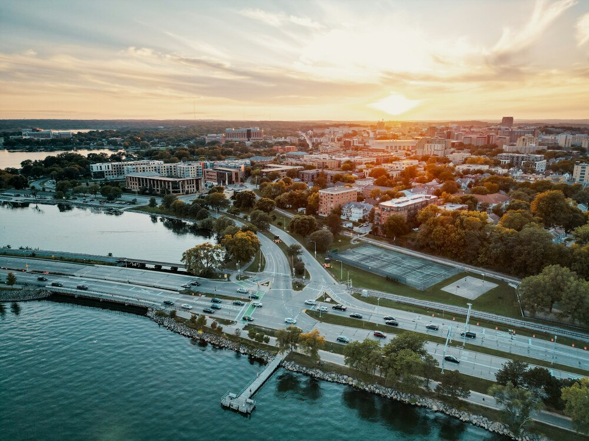

Visit Madison, Wisconsin!
Enjoy the capitol of Wisconsin! Where the beauty of nature blends seamlessly with vibrant city life. This unique city is one of two US cities built on an isthmus! Meaning it is nestled between two sparkling lakes, this charming capital city offers a dynamic mix of culture, outdoor adventure, and Midwestern hospitality.

Madison Sports
You have heard of the iconic Badger Football but what of the other local teams? See the spectacular UW women's hockey team too! Or outside of UW sports check out a Madison Mallards baseball game or the Madison Forwards soccer club!

Winter Wonders
Winter doesn't stop us here! Feel free to play some pond hockey, go ice fishing or enjoy the beauty of the snow! We have dozens of beautiful cross country ski trails scattered throughout the area!
America's Dairyland!
Did you know 90% of the milk produced in Wisconsin is turned into cheese! Come experience a diverse world of cheese you never knew! And don't leave without tasting our cheese curds! It's a Madison must!